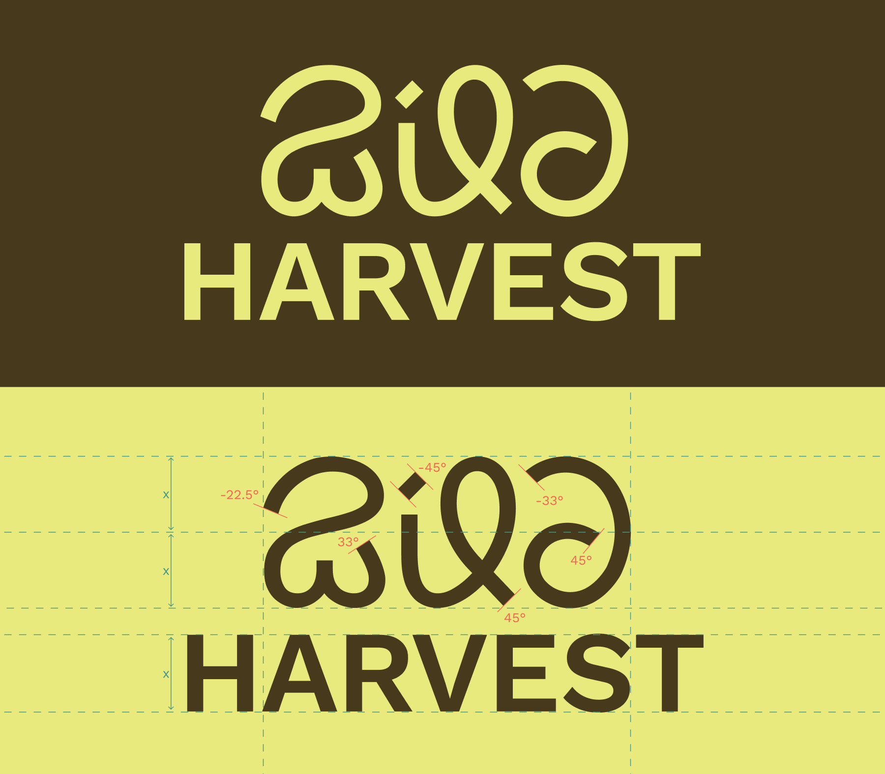

The Mahua flower's cultivation in India has a long history, which was severely impacted by the British Act of the 1850s. This brand identity pays homage to the tribal communities that have preserved the nutritional benefits and traditional applications of Mahua flowers. The logo features a custom typeface inspired by the native languages of the tribes in Jharkhand, the origin of Mahua flowers.
